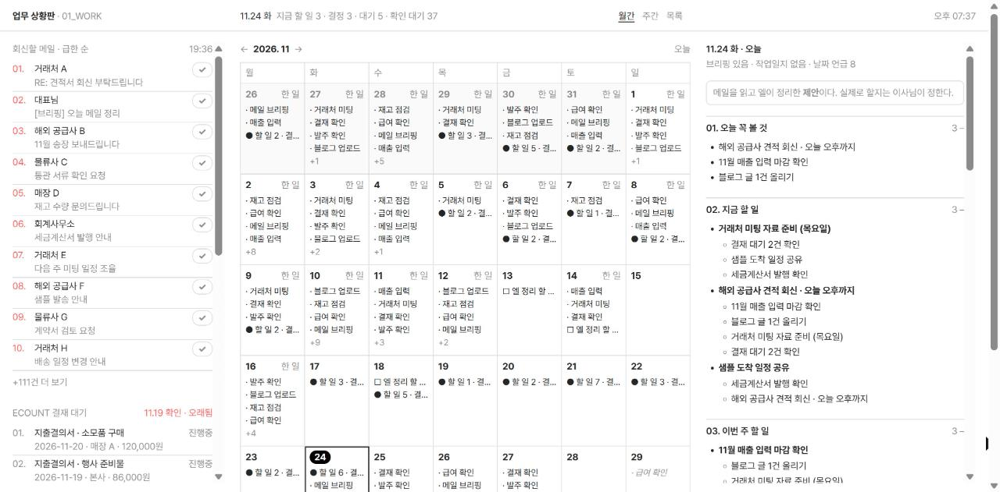

일 · 매일 아침
업무 상황판
아침에 이 화면 하나만 열어요. 밤사이 온 메일을 엘이 읽고 정리한 브리핑이 들어와요. 화면은 세 칸으로 나눴어요.

123456- 1회신할 메일 · 급한 순 밤사이 온 메일 중 내가 답해야 하는 것만, 급한 순서로. 처리하면 ✓를 눌러 지워요.
- 2결재 대기 ERP에 올라온 지출 결재 중 내가 확인할 것. 오래된 건 빨간 글씨로 알려 줘요.
- 3한 달 달력 날마다 메일 브리핑, 일정, 할 일이 쌓여요. 지난 일을 찾을 때 날짜만 누르면 돼요.
- 4엘의 제안 메일을 읽고 엘이 정리한 제안이에요. 실제로 할지는 내가 정해요.
- 5오늘 꼭 볼 것 · 지금 할 일 · 이번 주 할 일 급한 순서로 묶어 보여 주고, 근거가 된 메일 원문으로 바로 갈 수 있어요.
- 6월간 · 주간 · 목록 같은 내용을 달력, 한 주, 목록으로 바꿔 봐요.
이렇게 써요 아침에 ①에서 답할 메일을 고르고 → ⑤에서 오늘 할 일을 정하고 → 엘에게 맡길 일은 여기서 바로 지시해요. 보내기·결재처럼 되돌리기 어려운 일은 내가 확인한 뒤에만 해요.